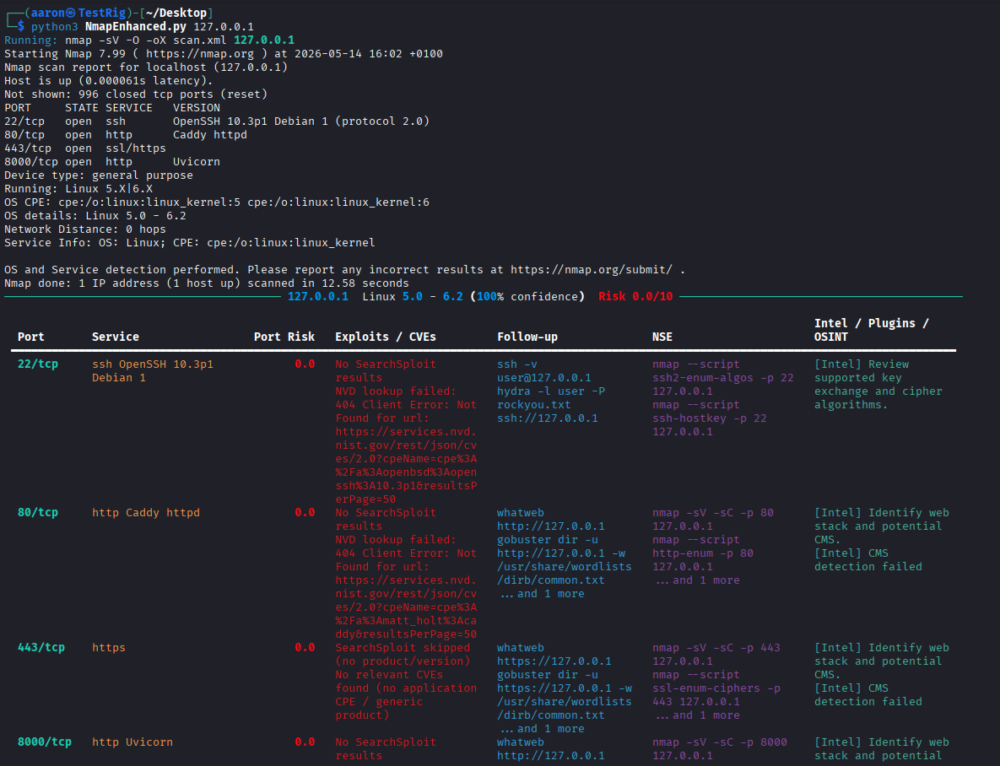

A custom wrapper around Nmap that automates scan profiles, tags services, and outputs structured data for use in other tools — including the AI Pentest Agent.
- Auto‑profile selection
- Service tagging
- JSON output
- Integrates with AI agent
- Reduces repetitive recon